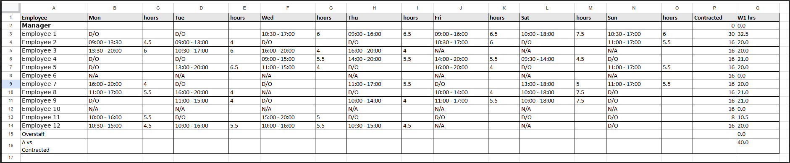
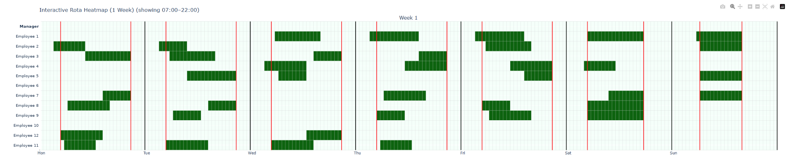

Potential weekly labour saving
Based on the historical comparisons and the £12.70 hourly assumption below.
A more efficient rota means fewer unnecessary paid hours. This tool minimises overstaffing while meeting the business’s staffing needs and rules. Custom built for a retail chain with 5–6 locations, it runs entirely offline.
I compared the tool’s rotas with real historical rotas from one branch. By reducing overstaffing, it saved an average of 8.8 scheduled hours per week while still meeting the configured staffing and contract requirements. At an assumed £12.70 an hour, that is around £110 a week in potential labour-cost savings.
Based on the historical comparisons and the £12.70 hourly assumption below.
Fewer paid hours each week on average, with the required staffing cover maintained.
Required staffing cover, availability, working-hour limits and fixed shifts were all respected.
Scroll sideways to compare all columns →
| Week commencing | Original rota | Optimised rota | Hours saved |
|---|---|---|---|
| 7 July | 213.5 hours | 207 hours | 6.5 hours |
| 21 July | 195 hours | 186 hours | 9 hours |
| 11 August | 217 hours | 206 hours | 11 hours |
Potential labour savings of around £110 per week. Across three historical rotas, the optimiser identified an average reduction of 8.8 staff hours per week, valued at £12.70 per hour.
An inefficient rota can put more people on shift than needed at certain times of day. Those extra hours add to the labour bill. The tool finds a better fit between shifts and required cover, reducing that overstaffing while keeping the business’s rules in place.
It reduces overstaffing while respecting:
Reducing overstaffing is the main saving. These features also make the manager’s job easier.
Create a single week or plan up to four weeks ahead.
Spread weekend shifts more fairly across the team, within the rota’s rules.
Lock shifts that cannot move and build the rest of the rota around them.
The manager enters the team’s details and required staffing levels. The tool then looks for a rota with less overstaffing that still meets those rules. Click any screenshot for a closer look. Staff names have been replaced with anonymous labels.
Enter contracted hours, maximum hours and important roles such as keyholders and opening staff.
Mark when each employee can and cannot work, including unavailable days and limited hours.
Set how many people are needed at different times of day. The tool uses those levels to keep the required cover and minimise staffing above it.
Keep fixed shifts in place while the rest of the rota is built around them. Use availability to account for time off.
Choose one to four weeks, check the details and click Generate rota. The tool looks for an efficient schedule for the manager to review before sharing with the team.
Open the rota in Excel to check individual shifts and hours, or use the visual overview to see the whole week at a glance. The screenshots below show what the tool produces.

Enlarge screenshot ↗Open the exported spreadsheet in Microsoft Excel to review each person’s shifts, days off and total weekly hours alongside their contracted hours.

Enlarge screenshot ↗See who’s working when and where shifts overlap, without reading through every row of the rota.
This tool was built specifically for the retail chain’s way of working. Yours would be built around your team, opening hours and staffing rules, then tested against your own rotas to see where overstaffing could be reduced.
It all runs on your own computer, entirely offline. Your staff data stays with you. Initial testing and a free trial let you check both the savings and how the tool runs on your laptop before any paid work.